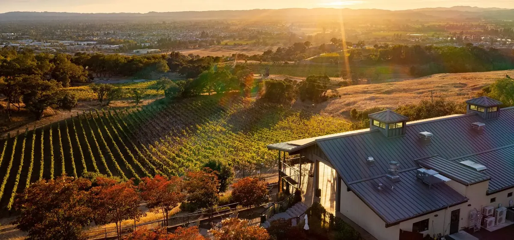

From the weekend before Thanksgiving into mid-December, Sonoma County wineries swap harvest parties for holiday ones: open houses with makers' markets, mulled wine, Santa photos among the vines and at least one chateau dressed up as a movie set. Most of these events sit within a short drive of downtown Santa Rosa, so you can fit one or two into a weekend and still be back in town for dinner. Here is what is on the 2026 calendar so far, with the details each winery or listing has published.

The weekend before Thanksgiving: November 21 and 22
2026 Holiday Open House + Marketplace, Windsor (Saturday, November 21, 11 am to 3 pm). Grand Cru Custom Crush at 1200 American Way hosts a holiday open house with tastings from the small wineries that make wine there. The Sonoma County Tourism listing names Bienvenue, Boars' View, Bruliam, Bucher, Copper Six, Fat Dragon, DuMOL, Jeff Cohn, Moret Brealynn, Parea and Stringer, with more to be announced. The ticket covers admission and tastings; food, bottles and the marketplace of local makers are paid for separately. The listing does not give a price, so check Grand Cru's own events page before you go.
Taste Route 116's Celebratory Toasts (November 21 and 22, 11 am to 4 pm). The wineries along Highway 116, west of Santa Rosa, share a holiday weekend on the county events calendar. De Loach Vineyards on Olivet Road in Santa Rosa is one of the Taste Route 116 wineries.
Holiday Sip & Paint at Paradise Ridge Winery, Santa Rosa (Sunday, November 22, 1 to 3 pm). A painting afternoon with a glass of wine, without leaving Santa Rosa.
At Jordan Vineyard & Winery in Alexander Valley, the same weekend brings an Afternoon Tea in the formal dining room on November 21 and Yoga at Vista Point on November 22. Jordan's calendar lists both; book through the winery.
Thanksgiving weekend: November 27 to 29
Scandinavian Christmas at West Wines, Healdsburg (November 27 to 29, 11 am to 4 pm). West Wines brings back its Swedish-style holiday tasting, built around warm glögg and sweet treats. In past years the winery has asked guests to reserve on Tock, with walk-ins only as space allows, so plan on booking ahead.
Holiday Celebration + Marketplace at Dry Creek Vineyard, Healdsburg (Saturday, November 28, noon to 4 pm). A holiday celebration and market in the Dry Creek Valley.
Sonoma Valley Lighted Tractor Parade, Sonoma (Saturday, November 28, 6:30 pm). Not a winery event, but easy to pair with an afternoon of tasting in the Sonoma Valley.
If you are in Santa Rosa that Friday, the downtown Winter Lights Tree Lighting Celebration on Old Courthouse Square runs from 4 to 7 pm. Our Thanksgiving weekend guide covers what else is open in town.
Early December: December 5 and 6
Christmas at Jordan, Healdsburg (Saturday, December 5, 1 to 4 pm). This year Jordan turns its chateau into the McCallister house from Home Alone, with more than 20 decorated trees, a progressive food experience, Jordan wines, photos with Santa, a photo booth and a hot chocolate bar. There is also a chance to donate to Toys for Tots. Tickets are $175 per person, with member pricing for some wine club levels, and the event is for guests 21 and over. Jordan is at 1474 Alexander Valley Road.
Santa at Larson Family Winery, Sonoma (December 5 and 6, 11 am to 4 pm). Larson offers reserved photo sessions with Santa of about five minutes each. Sessions cost $52 for Larson wine club members and $65 for everyone else, including a 5 x 7 print, with more photo packages sold separately. The winery says these sessions sell out quickly, and you can book a tasting before or after.
Holiday Open House at De Loach Vineyards, Santa Rosa (Saturday, December 5). De Loach lists a holiday open house on its events page. Times had not been posted when we checked, so look again closer to the date. The winery is at 1791 Olivet Road.
Mid-December: a cookie workshop on Highway 12
Holiday Cookie Workshop & Wine Social at St. Francis Winery (Sunday, December 13). Pastry Chef Marina Medan leads two-hour cookie decorating sessions, with tastings from St. Francis's Artisan Collection, seasonal hors d'oeuvres and a mulled wine reception. You take home a decorated box of cookies. Tickets are $60 for club members and $75 for guests, including a 20 percent service charge, and guests must be 21 or older. When we checked, the 11 am session was sold out and the 2 pm session was still listed. St. Francis is at 100 Pythian Road at Highway 12 in Santa Rosa.
Tips for a holiday winery weekend
- Book early. Ticketed events like Christmas at Jordan, Larson's Santa sessions and the St. Francis workshop have fixed capacity, and some already show sold-out times.
- Check the details again the week before. Several listings above give a date without a time or price. Wineries post those closer to the day.
- Mind the age rules. Jordan and St. Francis are 21 and over. Larson's Santa photos are the most family-friendly option on this list.
- Plan the driving. Pick one valley per day and decide on a designated driver, or book a car, before the first pour.
Good to know
- Nov 21: Holiday Open House + Marketplace, Grand Cru Custom Crush, Windsor, 11 am to 3 pm.
- Nov 21 to 22: Taste Route 116's Celebratory Toasts, 11 am to 4 pm.
- Nov 27 to 29: Scandinavian Christmas at West Wines, Healdsburg, 11 am to 4 pm.
- Nov 28: Dry Creek Vineyard Holiday Celebration + Marketplace, noon to 4 pm.
- Dec 5: Christmas at Jordan, 1 to 4 pm, $175, 21+.
- Dec 5 to 6: Santa photos at Larson Family Winery, $52 club or $65.
- Dec 13: Holiday Cookie Workshop at St. Francis Winery, $60 club or $75, 21+.
Base yourself in downtown Santa Rosa
Santa Rosa sits in the middle of all of this: Windsor and Healdsburg to the north, the Russian River Valley to the west and the Sonoma Valley to the southeast. Hotel E is in a historic building on Old Courthouse Square, with continental breakfast before a day of tasting, an evening happy hour when you get back and valet parking. Art House Santa Rosa is a few blocks away on 7th Street. For more routes, see our guide to wine tasting from Santa Rosa.
Plan your stay downtown
Browse hotels, restaurants, wineries and attractions, all in one place.
Open the directory